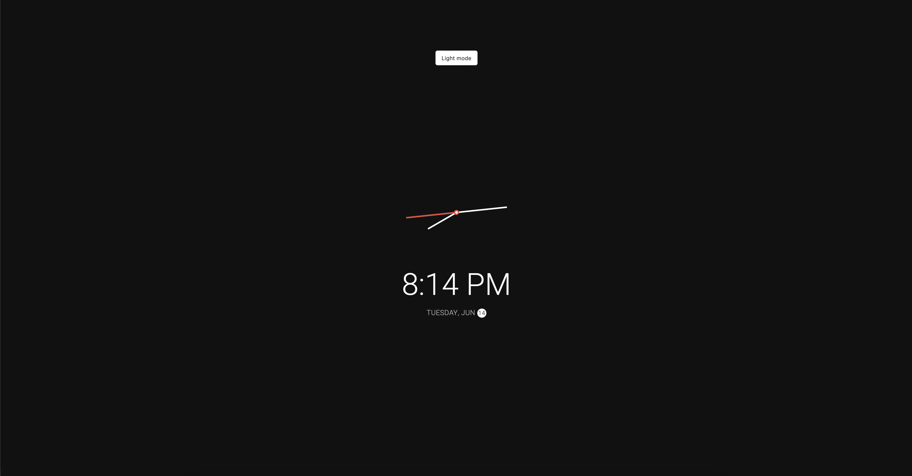
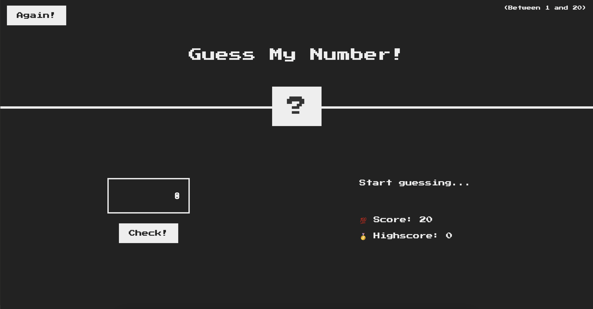
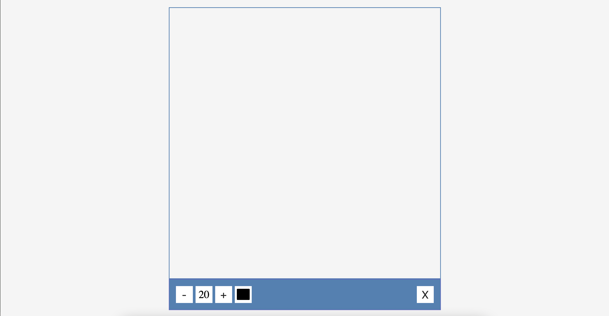
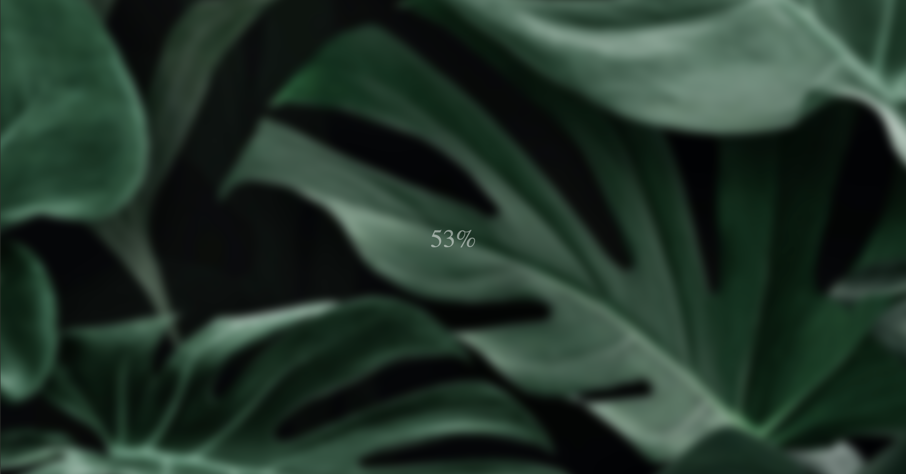
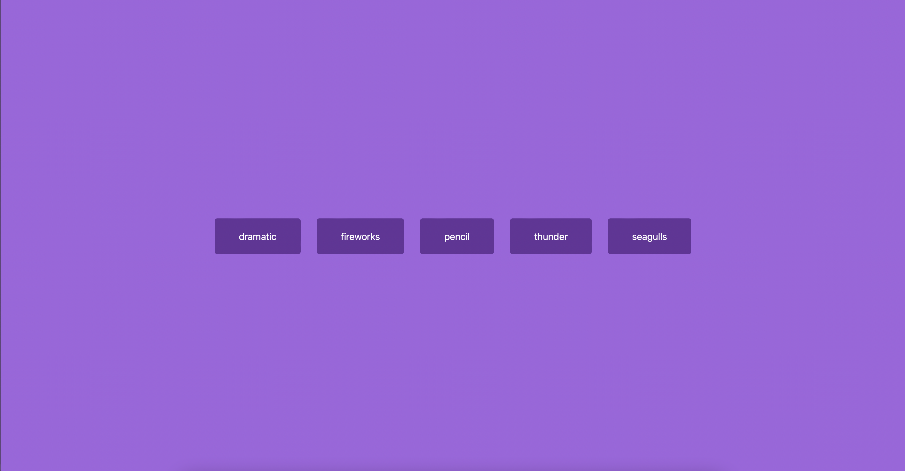

VESELIN NANOV
Personal Development Website
This is my personal development website. In here I will present what I have been doing and working on the past 18 weeks of Semester 2 for Front End Development, Media Production and UX/UCD Design.
UX/UCD
UX/UCD was one of the subjects that did not really interest me in the beginning. However, after realising how important it is, I started enjoying it a lot more and right now it is one of my favourite subjects. Click the button to see more of my UX/UCD journey.
MEDIA PRODUCTION
Throughout the semester, Media was one of the subjects I had previous background in. It was really fun to work on a branding assignmentm, create a photography portfolio and finally make a video documentary with my team.
PROJECT
For Project, my and I had to create a website for a client. We researched, designed, coded together. With a few exceptions we were all a team and we created the final version of the website. I was mostly active during the research phase of the project and the designing.
ABOUT ME
I am a 19 year old student at the Fontys University of Applied Science. I have recently moved here to the Netherlands and it's been quite a journey living on my own and having a lot of responsibilities. I have been getting used to everything and it has been quite hard, but I am sure I will manage with everything.
Some of my projects
Pig Game

This game is based on random events. It is played by 2 players. Focus: JS.
Clock
This analog clock shows the date and the time with a light/dark mode feature.
Guess the number
Guess the random generated number in less than 20 moves and improve your highscore.
Drawing app
This app lets you create a drawing with a brush that you can change the size to and a rgb color picker.
Blurry loading
This is a site I have done with a blurry effect. When the counter gets to 0 the blur effect disappears.
Soundboard
This lets you play around with sounds and create different combinations.